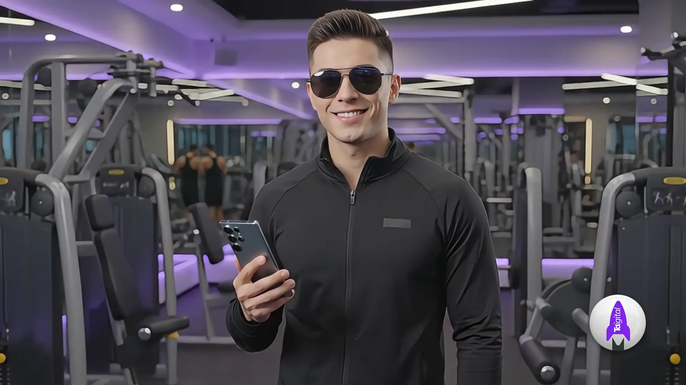
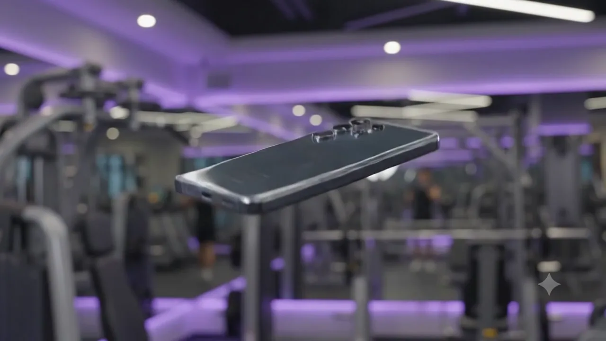
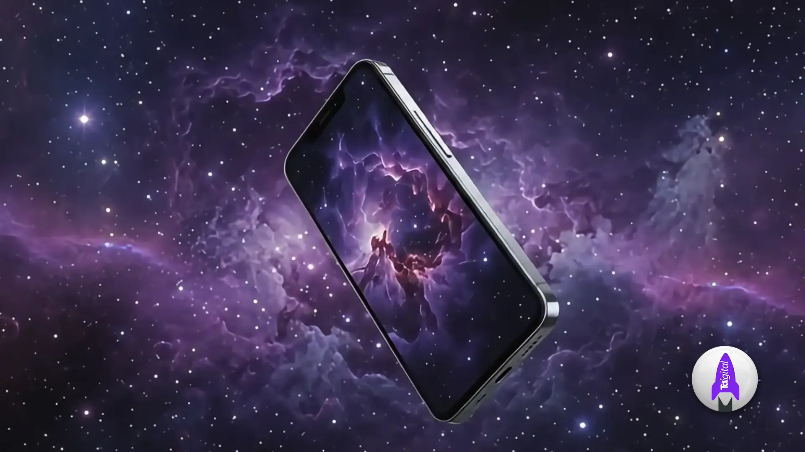
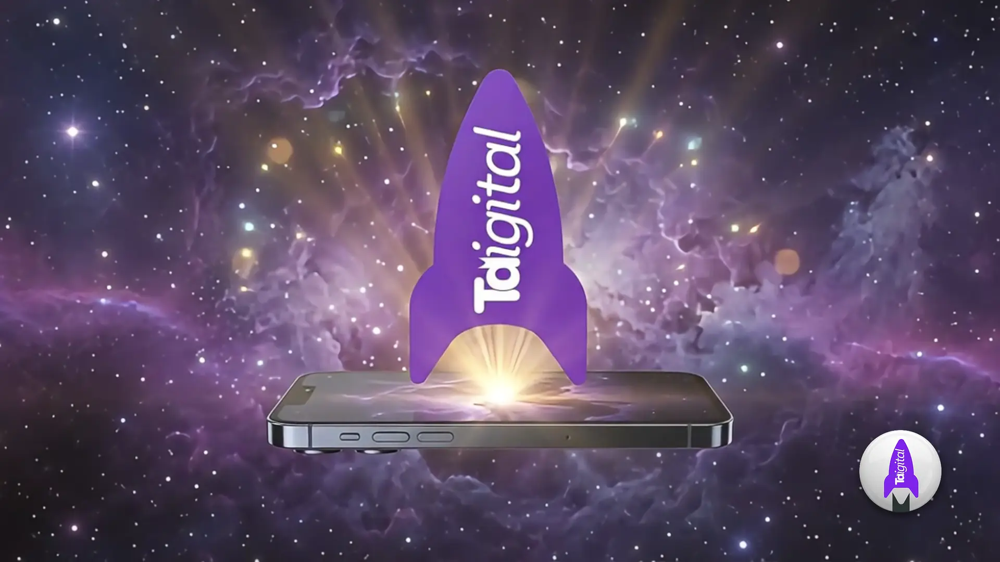

TDigital · Programa de Parceiros
Decole
O programa de parceiros da TDigital para influenciadores e criadores de conteúdo.
TDigital · Programa de Parceiros
O programa de parceiros da TDigital para influenciadores e criadores de conteúdo.
Estágio 02 · O impulso
Você já tem o único equipamento que importa: o celular na sua mão e as pessoas que confiam em você.
Estágio 03 · A ferramenta
Você publica do jeito que já publica. A estrutura de mídia fica com a gente.
Estágio 04 · A travessia
O mesmo conteúdo, com investimento por trás. É o que muda a escala do seu alcance.
Estágio 05 · Ignição
Tráfego pago, criativo e mensuração ligados por trás daquilo que você publica.
Estágio 06 · Lançamento
Conte pra gente onde você publica e quem te acompanha.
Candidatar-se ao programaA sequência inteira dura 9,17 segundos. Aqui ela virou 120 quadros que você controla com o scroll — do chão da academia até a decolagem.




Se você cria conteúdo e quer transformar audiência em parceria, o próximo passo é uma conversa. Fale com o time comercial da TDigital e a gente explica como funciona.
Falar com o time